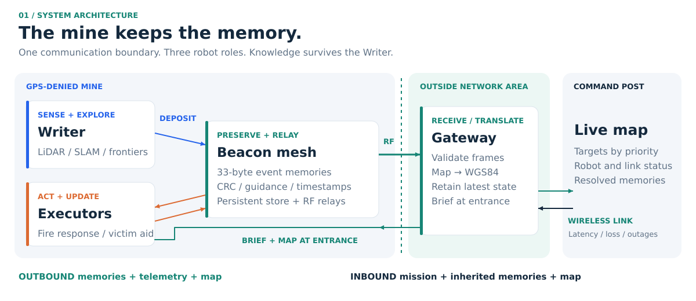
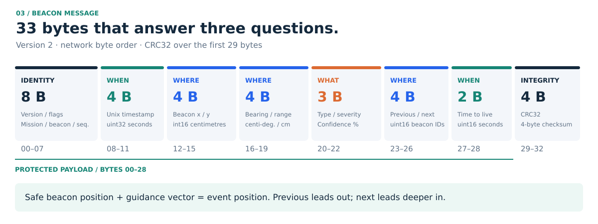
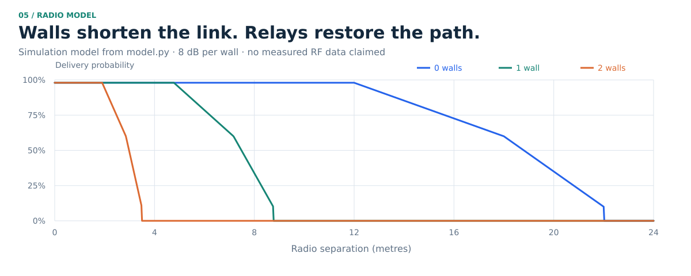
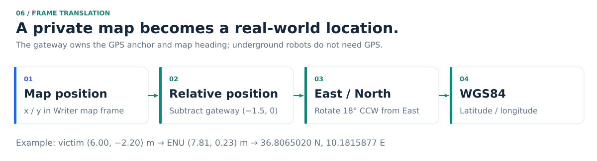
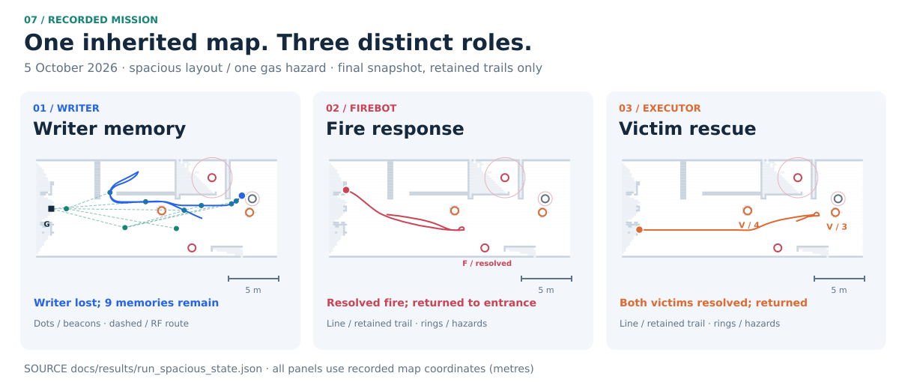
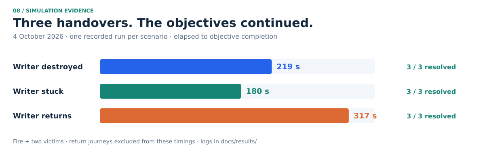
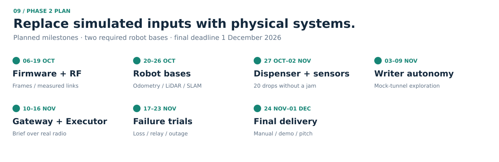

IEEE RAS × IEEE AESS / TSYP14
LivingMap.
If the Writer is lost,
the map is not.
Spatial memory for emergency robots.
MINES & TUNNELS · PHASE 1 SIMULATION
THE ENVIRONMENT REMEMBERS
What happened. Where to go. When it was written.
01 / THE CONTINUITY PROBLEM
A robot can fail.
Its discoveries should survive.
EXPLORING ROBOT
Writer
explores + senses
WRITER LOST
The exploring robot is no longer available.
INDEPENDENT MEMORY
B01B02B03
Beacons remain.
Event + guidance + timestamp
Persistent records. Relayed advertisements.
MISSION CONTINUES
Executor inherits.
A gateway brief gives it memories and the last uploaded map before entry.
No restart from zero.
02 / SYSTEM ARCHITECTURE
One boundary. One path to the outside.

Command post: WHO + WHAT. Robot: HOW.
03 / THE MEMORY UNIT
33 bytes. Three essential questions.
WHAT Event, severity, confidence
WHERE Position, guidance, chain
WHEN Timestamp and expiry

A safe-standoff beacon records a reached place and points toward the event.
04 / FROM THE MINE TO THE WORLD
Relay through rock. Translate at the gateway.

RF mesh
8 dB modeled loss per wall.
Recorded memories arrive in 2–3 hops.

GPS outside
The gateway owns the GPS anchor.
Underground robots keep local coordinates.
05 / INHERITED MISSION EXECUTION
Secure the scene. Then assist the victims.

WRITER Explore + preserve
FIRE ROBOT Extinguish + update
RESCUE Assist by priority + update
06 / EVIDENCE
Three Writer outcomes. Continued objectives.

3 / 3Fire + victim memories resolved
in each recorded scenario
149Central automated tests passed
5 October 2026
2–3Recorded RF hops
to the gateway
07 / FAILURE-AWARE DESIGN
Make failure visible. Preserve useful knowledge.
Writer loss
Independent beacon store.
Mission handover with available memories.
Relay loss
Alternative mesh routes.
One recorded relay removal recovered five dependent routes.
Link outage
Keep the latest state.
Forward on recovery and retry commands.
What still needs workPhysical sensing and radio measurements. Gateway redundancy. Explicit partial-success status and confirmed write-back. Return-clearance handling.
08 / THE PHYSICAL PROTOTYPE
Keep the logic. Replace the simulated inputs.

REQUIRED PROTOTYPEWriter + ExecutorReal sensors, dispenser, battery beacons and gateway.
PLANNING BUDGET≈ 4,650 DTTwo robots with 10% contingency; optional fire robot excluded.
LIVINGMAP / SPATIAL MEMORY FOR EMERGENCY ROBOTS
The next robot
starts with knowledge.
Explore → Preserve → Continue → Update